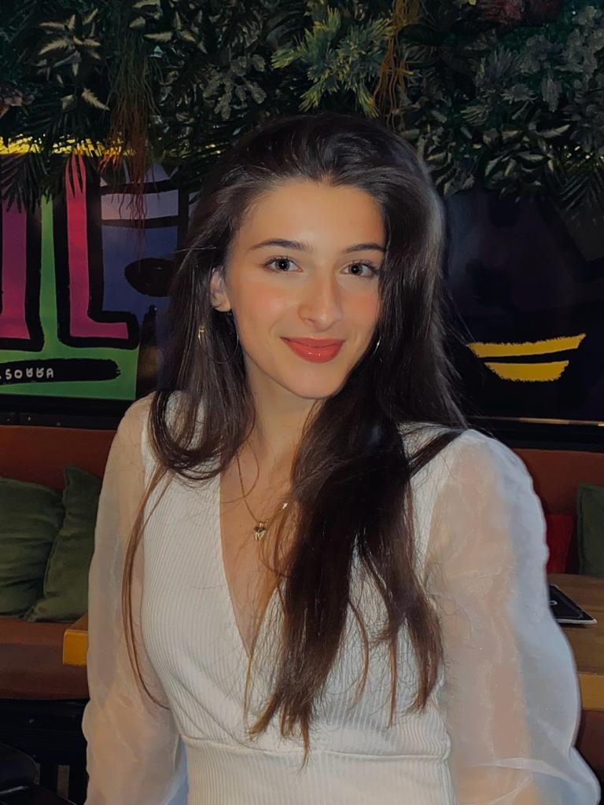

Hey, I am Fiori
This is My personal Portofolio
Junior Web Developer

Junior Web Developer
TUMO is a new kind of educational experience at the intersection of technology and design. At TUMO, teens take charge of their own learning, gaining cutting edge skills in the fields that matter today Teens combine self-learning activities, workshops and learning labs, picking and choosing from whatever piques their interest.
Web Design Internship In this internship I've learned many things that helped me to advance my knowledge in front-end and especially back-end development. I also got in touch with new technologies and some fundamentals of web programming.
During a one-month internship in Seville, Spain, I had the opportunity to gain practical experience in the field of Information Technology. This international exposure allowed me to work on diverse IT projects and develop a global perspective on IT practices. This experienceprovided valuable insights and enhanced my IT knowledge.
Python,JAVA,.Net Framework, Ruby.Full-Stack Software Development course.
I'm a dedicated Software Developer currently honing my skills at Hermann Gmeiner Vocational School, specializing in Programming and Software Engineering. I take pride in crafting clean and logical code, always aiming for creativity in my solutions. My current goal is to attend the university for Software developer in Germany. abroad, driven by a passion for continuous learning and a desire to contribute to innovative projects. Excited about the possibilities ahead, I'm eager to make a meaningful impact in the world of technology.
Adobe Photoshop for scin care products
School Project in Web Development